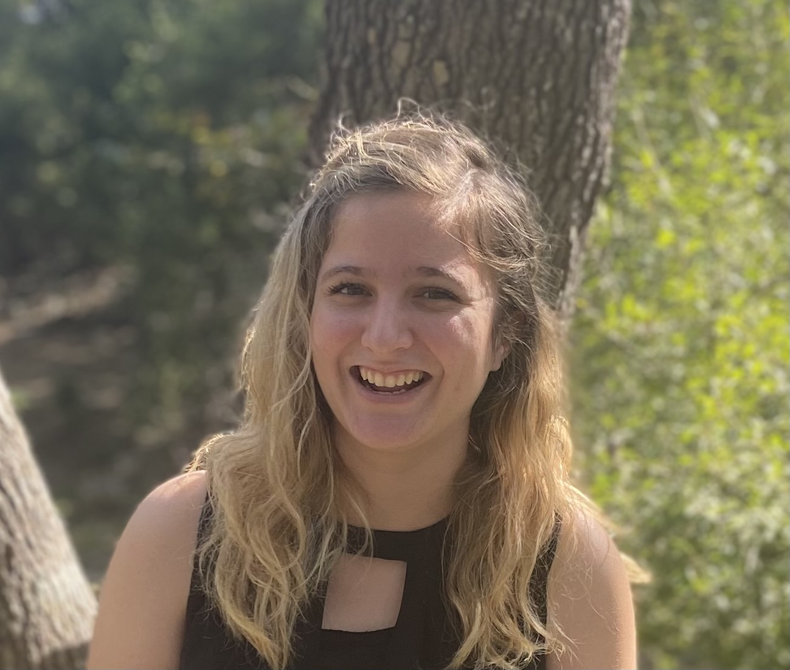
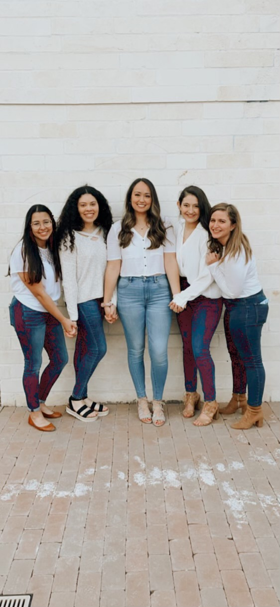
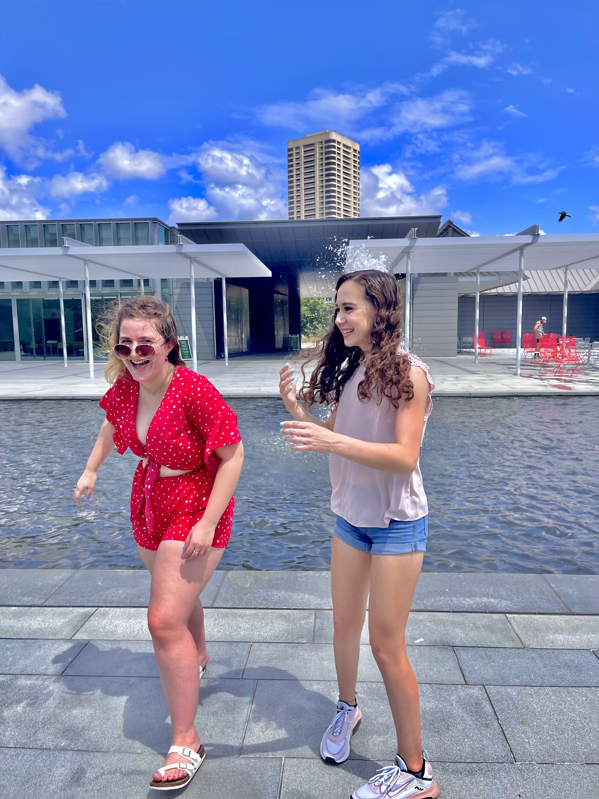
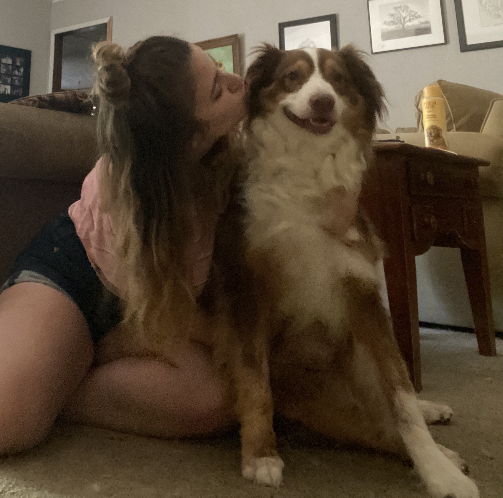

Howdy! My name is Annemarie Bell. I am a Computer Science Major at Texas A&M hoping to specialize in Software Development particularly working with the Cloud. I was born and raised in Round Rock Texas, which basically implies that I grew up watching baseball games a lot and eating the best doughnuts in Texas, dare I say the world.

I am the youngest of nine children, six of which are boys so growing up there was a lot of rough housing. Although they can be the biggest pains in the world my siblings did give me one of the best gifts ever, my niece and godchild Ellie.
Outside of Computer Science I am an active Member of an Engineering Sorority on Campus, named Phi Sigma Rho. I am very lucky to be apart of it because those girls are absolutely amazing and have made Texas A&M a home for me.
 
In my free time, I enjoy painting, hanging out with my friends and spending time with my dog, Dakota. I got Dakota the spring of my freshmen year of high school so through my ups and downs she has always been there. One of my favorite things is coming home to her, and when I am super stressed, I absolutely love running her.

When I get really stressed, I will bake anything, brownies, cupcakes, and cookies. Another thing I love to do when I am stressed is paint , I am not very good at it however it is super soothing. I also really enjoy puzzles a very random but true fact. One of my biggest hopes is to inspire young girls to also be a part of S.T.E.M. One thing that I have always felt passionate about was women being equally represented in the S.T.E.M field because although they are underrepresented the women that I have met in S.T.E.M have been some of the most inspirational and talented women.